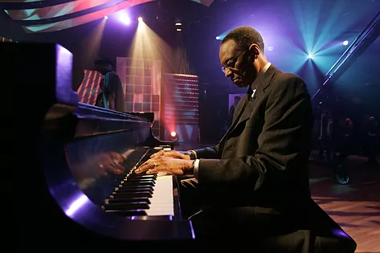

MÚSICA
Ramsey Lewis
El tres veces ganador de un premio Grammy ha fallecido "tranquilamente" en su casa
El pianista y compositor estadounidense de jazz Ramsey Lewis ha muerto este lunes en su casa de Chicago a los 87 años, según ha informado su familia en un comunicado. Ramsey E. Lewis Jr. nació en Chicago el 27 de mayo de 1935. Creció en un proyecto de viviendas públicas de Chicago y empezó a acudir clases de piano a los cuatro años,en su adolescencia se unió a una banda, los Clefs, un septeto de colegiales que mezclaba el jazz y el R&B. Tras el estallido de la Guerra de Corea, el servicio militar obligatorio se llevó a varios miembros de los Clefs, entre ellos Burton. Los tres miembros que no fueron reclutados --Lewis, el bajista Eldee Young y el baterista Redd Holt-- formaron lo que se conocería como el clásico Ramsey Lewis Trio.Tres años después, Lewis fue invitado a actuar con el trío en BirdlandLewis se abrió paso en solitario a lo grande en 1965, Luego de varios Grammys, En 2007, Lewis recibió el premio 'National Endowment for the Arts Jazz Master Award', que lo situó en la sagrada compañía de leyendas del piano como Ahmad Jamal, Chick Corea, McCoy Tyner, Dr. Billy Taylor y Cecil Taylor